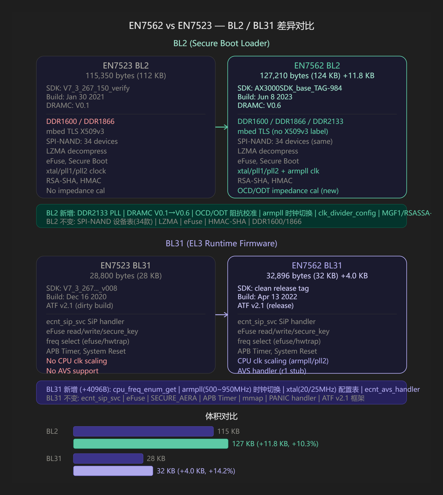
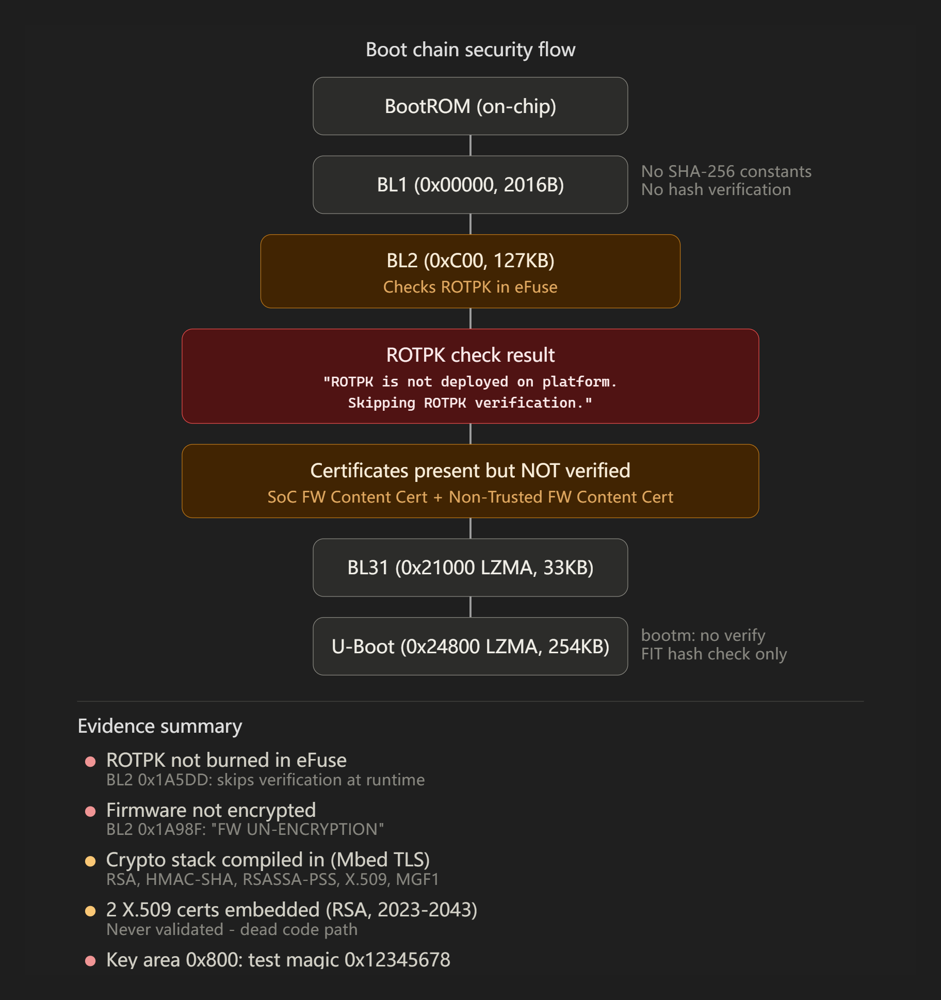
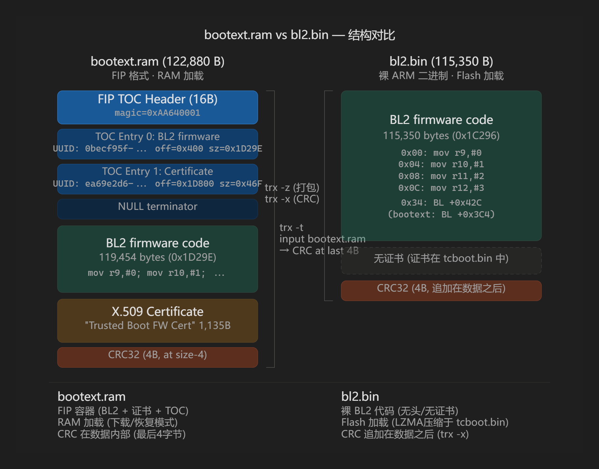

关于达发 AIROHA TCBOOT(Bootloader) 的一些分析
TCBOOT 组成
这个 mtd0 的 bootloader 不是单纯的 “U-Boot 一个文件”，而是厂商打包后的 tcboot.bin / bootloader 总包。从文件里看到的结构大致是：
mtd0 bootloader: 0x00000000-0x00080000, 512 KiB
里面包含：
0x00000000 起：ARMv7 启动代码 / 前级 loader / BL2 类代码
0x0001a000 附近：DDR、SPI NAND、secure boot、LZMA 解压相关代码和字符串
0x0001e000 附近：Trusted Boot / Non-Trusted Firmware 证书链
0x00021000：LZMA 压缩 payload，解出来是 BL31
0x00024800：LZMA 压缩 payload，解出来是 U-Boot
0x0007c000 附近：U-Boot 环境变量区比较关键的证据：
BL2: …
BL2: Booting BL32
EXIT from BL2
Trusted Boot FW Certificate0
Non-Trusted Firmware Content Certificate0
0x21000 的 LZMA 解压后有：
BL31: %s
ecnt_sip_svc
ecnt_plat_sip_handler
0x24800 的 LZMA 解压后有：
U-Boot 2014.04-rc1 (Jun 08 2023 - 13:58:05)
ECNT>
arch=arm
cpu=armv7
soc=en7523
vendor=ecnt
所以它的启动链更像是：
SoC BootROM
-> mtd0 里的前级 loader / BL2
-> 初始化 PLL / DDR / SPI NAND
-> 校验证书 / secure boot 相关处理
-> 解压并启动 BL31
-> 解压并进入 U-Boot，也就是 BL33
-> 读取 tclinux
-> bootm 启动 kernel
也就是说，你没有看到单独的 BL2.bin、FIP.bin(BL31.bin、u-boot.bin) 分区，是因为它们都被打进了一个厂商 bootloader 镜像里。U-Boot 环境里也写着：
uboot_filename=tcboot.bin
它不是裸 U-Boot，而是包含前级、BL31、U-Boot、证书和环境区的组合包。
| Component | Offset | Size | Description |
|---|---|---|---|
bl1.bin | 0x00000 | 2,016 B | BL1 first-stage loader (exact match with en7523/en7523-bl1.bin) |
key_area.bin | 0x007E0 | 1,056 B | Secure-boot key/hash table |
bl2.bin | 0x00C00 | 127,210 B | Pre-assembled BL2 (DDR init, SPI-NAND, LZMA, secure boot) |
certificates.bin | 0x20000 | 4,096 B | Two X.509 DER certificates (trusted + non-trusted FW) |
bl31.lzma.bin | 0x21000 | 14,336 B | BL31 LZMA compressed stream |
bl31.bin | — | 32,896 B | BL31 decompressed (AArch64 runtime firmware) |
uboot.lzma.bin | 0x24800 | 358,400 B | U-Boot LZMA compressed stream |
uboot.bin | — | 260,352 B | U-Boot 2014.04-rc1 (Jun 08 2023) decompressed |
uboot.env.bin | 0x7C000 | 16,384 B | U-Boot environment (37 variables) |
BL2 差异 (EN7523 vs EN7562)
两个 BL2 是基于不同 SDK 版本的独立编译。
en7523/en7529是en7523系列的芯片的早期应用，大多使用了DRAMC V0.1/v0.2，而en7562是en7523系列的后续产品，使用了DRAMC V0.6，支持DDR2133和更复杂的时钟管理。
当然 en7562 早期SDK也有V0.2的，但是en7523/en7529的SDK版本更老，至少我没见到过 V0.6 的 en7523/en7529 DRAMC。
1. SDK 版本跨越
| EN7523 | EN7562 | |
|---|---|---|
| SDK | V7_3_267_150_verify_20210126_v024 | br_v1.00_AX3000SDK_base_TAG-984 |
| 构建日期 | 2021-01-30 | 2023-06-08 |
| DRAMC | V0.1 | V0.6 |
从 V7.3 SDK 迁移到了全新的 AX3000 SDK，时间跨度约 2.5 年。
2. DDR 控制器升级 (V0.1 → V0.6)
新增 DDR2133 PLL 支持：EN7523 只有
DDR1600和DDR1866，EN7562 增加了DDR2133 PLL setting init新增阻抗校准：EN7562 增加了
Final Impdance Cal Result: OCDP:0x, OCDN:0x, ODTP:0x, ODTN:0x——这是 DDR 的 OCD (Off-Chip Driver) 和 ODT (On-Die Termination) 阻抗校准输出，DDR2133 需要更精确的信号完整性调校
3. CPU 时钟管理增强
EN7562 BL2 新增了大量时钟相关代码：
armpll时钟切换（cpu clock switch to armpll fail./cpu clock switch to pll2 fail.）clk_divider_config分频器配置（6条 ERROR 校验）SYSPLL_PCW值读取这些在 EN7523 BL2 中完全不存在（时钟管理原本只在 BL31 中）
4. 安全启动证书链扩展
EN7562 BL2 新增了4类证书的字符串定义：
Trusted Boot FW Certificate— 可信启动固件证书Trusted Key Certificate— 可信密钥证书SoC Firmware Key Certificate— SoC 固件密钥证书Non-Trusted Firmware Key Certificate— 非可信固件密钥证书
以及 MGF1 掩码生成（(%s, MGF1-%s, 0x%02X)）和 RSASSA-PSS 支持，密码学栈更完整。
5. 不变的部分
SPI-NAND 设备表完全相同：34 款 Flash 芯片（Winbond W25N01G, GigaDevice GD5F 系列, Etron EM73 系列, Kioxia TC58 系列, Micron MT29F 系列），只是偏移不同
LZMA 解压、eFuse 操作、HMAC-SHA、RSA 签名验证等核心功能不变
BL31 差异 (EN7523 vs EN7562)
这正好是一个 4KB 页的新代码，包含：
CPU 频率动态调节：
cpu_freq_enum_get— CPU 频率枚举函数armpll(500~950MHz)— ARM PLL 可变频率范围cpu clock switch to armpll/pll2 fail.— 时钟切换错误处理xtal(20/25MHz)— 晶振频率配置表（config_xtal20M/config_xtal25M）
AVS（自适应电压调节）：
Warning : ecnt_avs_handler r1 not support— AVS 处理器存根（r1 版本暂不支持，框架已就位）
armpll 获取逻辑：
Warning : Can not get the correct oriarmpll !!ERROR: can't get armpll (isXtal25M:%d, SYSPLL_PCW value:0x%x)
共享不变的部分
ATF v2.1 框架的核心完全一致：ecnt_sip_svc SiP 调用、ecnt_plat_sip_handler、eFuse 读写与安全密钥、SECURE_AERA 安全区域检查、APB Timer、mmap 内存映射、PANIC 处理器等。
总结

BL2主要来自：DRAMC V0.1→V0.6 的 DDR2133 支持和阻抗校准、AX3000 SDK 的整体代码重构、armpll 时钟管理代码从 BL31 上移到 BL2、以及更完整的安全证书链。
BL31精确对应新增的 CPU 频率动态调节模块——EN7562 支持 armpll 在 500-950MHz 范围动态切换，并预留了 AVS 接口，这是 EN7523 所没有的功耗管理能力。
安全启动

大多数 EN7523 设备的 bootloader 编译了完整的安全启动支持，但 eFuse 未烧录 ROTPK（根信任公钥哈希），导致运行时验证被跳过。
1 | ROTPK is not deployed on platform. Skipping ROTPK verification. |
BL2 启动时会读取 eFuse 中的 ROTPK。由于 eFuse 没有烧录，BL2 走了 “skip” 分支——直接跳过证书验证，不检查 BL31 和 U-Boot 的签名。
验证流程（实际运行路径）
| 阶段 | 做了什么 | 安全检查 |
|---|---|---|
| BootROM | 加载 BL1 | 无验证 |
| BL1 (0x0, 2016B) | 加载 BL2 | 无 SHA-256 常量，不做哈希 |
| BL2 (0xC00, 127KB) | 读 eFuse 找 ROTPK | 未找到 → 跳过验证 |
| BL2 → BL31 | 解压 LZMA 加载 | 证书存在但未验证 |
| BL2 → U-Boot | 解压 LZMA 加载 | 证书存在但未验证 |
| U-Boot bootm | flash imgread 2048;bootm | 无签名验证 |
未生效时的安全机制
SDK 确实以 TRUSTED_BOARD_BOOT=1 编译，以下设施全部存在：
Mbed TLS 完整加密栈：RSA (SHA-224/256/384/512)、RSASSA-PSS + MGF1、HMAC-SHA-224/256/384/512、DES-CBC/3DES、X.509 ASN.1 解析器
2 个 X.509 DER 证书（0x20000）：
SoC Firmware Content Certificate（可信固件 = BL31）Non-Trusted Firmware Content Certificate（非可信固件 = U-Boot）- 有效期：2023-06-08 ~ 2043-06-03（与 U-Boot 构建日期一致）
- 都包含 RSA 公钥
4 类 TBBR 证书类型定义：Trusted Boot FW / Trusted Key / SoC Firmware Key / Non-Trusted FW Key
20 个 ECNT 私有 OID：
1.3.6.1.4.1.4128.2100.xxx固件加密支持：代码中同时存在
FW UN-ENCRYPTION和FW ENCRYPTION路径，当前走的是 UN-ENCRYPTION
真正启用安全验证
要激活安全启动，厂商需要：
生成 RSA 密钥对，将公钥的 SHA-256 哈希烧入 eFuse 的 ROTPK 区域
用私钥对 BL31 和 U-Boot 签名，签名嵌入证书
BL2 启动时读到 ROTPK → 验证证书签名 → 验证固件哈希 → 通过才加载
BOOTEXT.RAM
en7523_bootext.ram 和普通 bl2.bin 本质上是同一段 BL2 固件的不同打包形态，区别在于封装格式、包含内容和加载方式。
bootext.ram 是什么

它是一个标准的 FIP (Firmware Image Package) 格式文件，结构如下：
| 偏移 | 内容 | 大小 |
|---|---|---|
| 0x0000 | FIP TOC Header (magic=0xAA640001) | 16B |
| 0x0010 | TOC Entry 0: BL2 firmware (UUID: 0becf95f-...) | 40B |
| 0x0038 | TOC Entry 1: Certificate (UUID: ea69e2d6-...) | 40B |
| 0x0060 | NULL terminator | 40B |
| 0x0400 | BL2 固件代码 (ARM 指令) | 119,454B |
| 0x1D800 | X.509 证书 (“Trusted Boot FW Certificate”, DER, 2021-2041) | 1,135B |
| 0x1DFFC | CRC32 | 4B |
总大小 122,880B (0x1E000)，由 trx -t <input> bootext.ram 创建 — CRC 计算覆盖 (size-4) 字节，放在数据内部最后 4 字节，变长无 flash 填充。
bl2.bin 是什么
裸 ARM 二进制，无任何容器头，直接从 mov r9, #0 指令开始。大小 115,350B，由两步创建：
trx -z— 打包 bl21 + bl22.lzma + bl23.lzma + flash_table.lzmatrx -x— 在数据之后追加 4 字节 CRC
核心差异
| bootext.ram | bl2.bin | |
|---|---|---|
| 格式 | FIP 容器 (TOC + entries) | 裸 ARM 二进制 |
| 证书 | 内含 TBBR “Trusted Boot FW Certificate” | 无 (证书单独存于 tcboot.bin) |
| CRC 位置 | 数据内部最后 4 字节 | 数据之后追加 4 字节 |
| 加载方式 | RAM 加载 (下载/恢复模式) | Flash 加载 (LZMA 压缩后嵌入 tcboot.bin/mtd0) |
| 大小 | 122,880B (含 FIP 头+证书+对齐) | 115,350B (纯代码) |
| 创建工具 | trx -t <fip_input> bootext.ram | trx -z + trx -x |
两者 BL2 代码的前 0x34 字节完全相同（ARM vector table），仅 0x34 处一条 BL 跳转指令的目标不同（+0x42C vs +0x3C4），说明是同一代码库的不同编译版本。
简单说：bootext.ram = “boot extension” = 自包含的 RAM 加载版 BL2，自带证书和 FIP 元数据，用于 BootROM 直接加载到 RAM 执行（如下载模式/恢复模式）；而 bl2.bin 是精简的 flash 启动版，会被 LZMA 压缩后塞进 tcboot.bin 的 0xC00 偏移处。
识别 SPI-NAND 的BL2
如果得到的是成品bl2.bin，很难还原回可编辑闪存支持表的镜像，所以大概率只能用已知的芯片型号来匹配。
新平台EN7581/AN7552/AN7583那样有独立的flash_table.bin嵌入，而EN7523/EN7562是直接把flash_table与bl2高度耦合在一起。
1 | for f in en7523-bl2.bin an7562-bl2.bin; do echo "== $(basename "$f") =="; strings -a -t x "$f" | grep -Ei 'GD5F|W25N|TC58|MT29|EM73|F50L|XTX|flash_table|spi nand|spi_nand|SPI NAND|SPI_NAND' | head -n 60; echo; done |
1 | 199ff _SPI_NAND_DEVICE_ID_GD5F1GQ4UB |
救砖
Econet/Airoha 设计了一个类似高通9008/MTK UART的“Emergency upgarde”模式，但是中文互联网更喜欢称呼为“X模式”。
该模式由“XMODE” 驱动，具体方法为：
按住复位键，同时连接 TTL，终端会显示
CCCC，表示进入了 XMODE，此时会提示你“Press x”按下 x 键，设备会进入，就会进入紧急升级模式，等待主机发送 bootext.ram
通过xmodem 工具，将 bootext.ram 发送到设备，设备会在 RAM 中解压并执行 BL2，BL2 会初始化，并提示按下 x 键继续升级
按下 x 键，再次使用 xmodem 发送 tcboot.bin，BL2 会解压并写入 SPI-NAND，完成升级
1 | EN7523DRAMC V0.6 |
这个模式的好处是不依赖 SPI-NAND 的内容，即使 NAND 里没有有效的 bootloader，也可以通过 XMODE 直接升级。
另外如果原来的 bl2 没有被破坏，可以在第一阶段不需要升级 bootext.ram，等待其超时进入第二阶段，直接发送 tcboot.bin 也可以升级。
bootext.ram 里面包含了 BL2、证书和 CRC 校验，BL2 会在 RAM 中解压并执行，初始化 DDR、SPI-NAND、secure boot 等，然后再解压 tcboot.bin 并写入 SPI-NAND。所以bootext.ram不能乱用，里面的证书要匹配机型，一旦是不匹配的bl2和证书，触发了panic，救砖就十分困难了。所以在 en7523/en7562 系列的 ATF 开源之前，我们应该尽量提取原厂的 tcboot.bin 以及其中存在的各个组成，打包配套的 bootext.ram，避免使用不匹配的 bootext.ram。
Tips: Airoha 的 uboot 通常会设置一个账号密码 ‘telecomadmin/nE7jA%5m’，通常会要求使用console前置登录，才能进入命令行，但是如果启动失败时，uboot 会直接进入命令行，不需要登录。